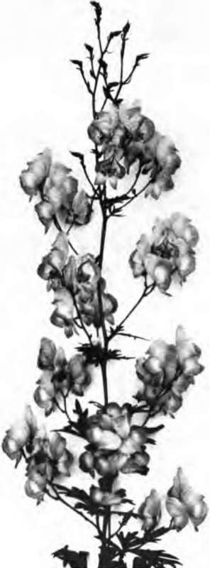

Chapter XXI. Knowing The Flowers By Name
Description
This section is from the book "Flower Gardening", by H. S. Adams. Also available from Amazon: Flower gardening.
Chapter XXI. Knowing The Flowers By Name
Every little while you hear this remark: "I never can remember the names of flowers." Change "can" to "do" and it would be nearer to the truth. Many do not remember the names of flowers, that is lamentably apparent; but anyone can remember them, if sufficiently interested. It is only a question of training the mind, consciously or unconsciously.
The memory will be helped a great deal if the striking similarity of the rules of naming flowers and civilized human beings is grasped clearly. In the botanical world the natural orders are divided into genera. Each genus or family has a name, which corresponds exactly to the surname of a man or woman. But the generic name always comes first, a plan which has much in its favor. A genus, in turn, is divided into species. This necessitates a christian name, so to speak; in botany it is called specific. Usually there is only one specific name; but, as with the human race, there may be another that is still more specific. Thus, to make the cor-respondence clearer:
ORDER | GENUS | SPECIES |
Crucifera | Iberis | Gibralt arica |
American | Jones | Hezekiah |
Latin is used for orders, genera and species, for the reason that it is the universal language of science. The order and specific names are translatable into any language; the generic name not always, as in the case of wistaria, which is coined from Wistar. .In the instance just mentioned the plant is Gibraltar candytuft and it belongs to the order of cross-bearers. Candytuft is doubtless a corruption of Candia tuft, as the first species cultivated (I. umbellata) was discovered on that island. Gibraltar implies habitat, but not a geographical restriction of range. Cross-bearers are so called because the four petals of the blossoms of plants in this order form a cross.
As plants come into cultivation, frequently in the wild, they generally acquire a common name, which may be a literal translation or something suggested by a fancied resemblance or a mere notion. Literally Viola tricolor would be the tri-colored violet, but that is not its customary name; in Europe and in this country the plant has numerous popular names. So the correspondence may be carried still farther by the statement that flowers, as well as human beings, frequently have nicknames—sometimes strikingly appropriate and again quite unfathomable as to the reason therefor. If only the correspondence had stopped right there! But flower names change; by force, not volition. Someone says to Bignonia radicans, "Here, you; from this time on your name will be Tecoma radicans and don't mind what So-and-So says to the contrary. Understand?" Or to Geum coccineum, "A mistake was made at your christening, it seems. You are not G. coccineum but G. chiloense? So in looking over the pages of the floral directory you occasionally have reason to wish that well enough had been let alone. Fortunately the confusion is only here and there.
The common names are most important to remember, provided that they are either the best possible rendering into the vernacular or, if fancifully descriptive, are sufficiently distinctive. Dog rose (Rosa canina), in the one class, and Chinese lantern plant (Physalis Francheti), in the other, are sufficiently definite. London pride is not, nor is bluebell; the former is Saxifraga umbrosa in Eng land and Lychnis chalcedonica here, while the latter is applied to more than one plant on each side of the Atlantic. Jerusalem cross is really a much better common name for the lychnis, as each blossom suggests the red cross of the Crusader.
It is well to inquire into the reason for every common name. The result is generally to create in the mind an association between the name and the plant. Moreover the inquiry leads one into a very pleasant field of folklore study, as well as greater intimacy with the garden. Look at a blossom of any aconitum on the plant and it is apparent from the shape of it why it is called monkshood and helmet flower. Pluck it, when fully open, and hold it with the back of the helmet down and it will be no less apparent that the little boys and girls of seventy years ago did not overstrain their imagination when they spoke of it as Pharaoh's chariot. It is just as well to know all these names; also that the best is aconite, because it is an English rendering of the generic name, aconitum.
"Look at the blossom of any aconitum on the plant and it is apparent from the shape of it why it is called monkshood and helmet flower".
Learn all the common names that you can, for the pleasurable side of it, but hold to the best for ordinary use. Choose white rock cress (Arabis albida), for example, in preference to welcome-home-husband-be-he-never-so-drunk and prince's feather (Polygonum orientate) to kiss-me-over-the-garden-gate. Not that these names are so foolish as they might seem at first glance. The arabis— also one of the stonecrops(Sedum album), which appears to have been given the same name—has a mass of white blossoms well calculated to enable a man to locate his doorstep at night, and as for the knotweed, it hangs its deep rose plumes over a gate in a most inviting way.
Having associated the common name with the plant, try to associate the botanical name with both. Use the dictionary, as well as botanical works, for reference. Such things as finding out that true bell-flowers have the generic name of Campanula (little bell), that a windflower is Anemone (from the Greek word for wind), that the pink is Dianthus (Greek for Jove's flower), that any spring primrose is Primula (from the Latin for first), that the finger-shaped blossoms of foxglove are the digit of Digitalis, and so on, help the memory. Adding specific names you get, Campanula per ski folia (peach-leaved bell flower) Anemone pennsylvanica (Penn-sylvanian anemone), Dianthus neglectus (neglected pink), Primula vulgaris (common primrose) and Digitalis purpurea (purple foxglove).
Pair off the various worts with the respective generic names and note the close relationship in some cases—such as Saponaria (soapwort), Plum* bago (leadwort) and Pulmonaria (lungwort). Woundwort (Stachys) has reference to the use of the woolly leaves to stop the flow of blood. Some of the other worts are more difficult; so are the banes—wolfs (Aconitum), leopard's (Doroni* cum) and flea (Erigeron or Inula). Labels are always a good aid to the memory, but should be relied upon less and less for species. For varieties they will always be necessary to a certain degree, as it would be foolish, even if possible, to burden the mind beyond a reasonable limit in that direction. Keep all labels out of sight wherever the planting is decorative; if there is a reserve garden use such tags on the memory there, so far as this can be done.
Continue to:
- prev: The Joy Of A Flower Hobby. Continued
- Table of Contents
- next: Chapter XXII. Birds And The Flower Garden